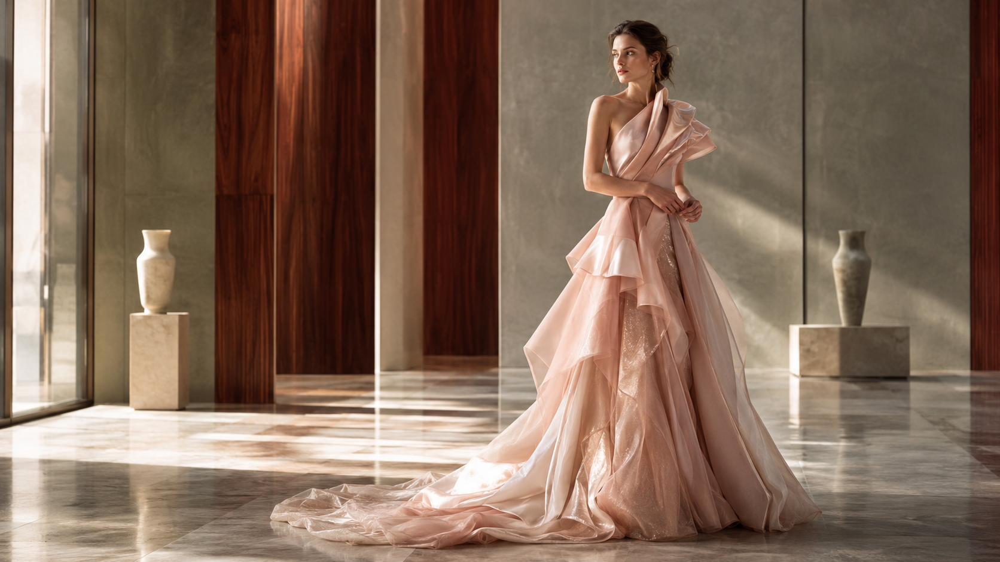

Guide 01 · Tailoring
The Art of Soft Tailoring
How fluid structure, thoughtful proportion and precise finishing create tailoring that feels graceful rather than rigid.

Silhouette first
Graceful dressing begins with observation. Before adding a new piece, notice how your existing wardrobe behaves through a complete day: which hems move easily, which shoulders stay balanced, and which fabrics still look composed after hours of wear. This simple review replaces abstract rules with useful evidence.
Start with one clear anchor, then let every other element answer it. An elongated coat may invite a quieter trouser; a luminous skirt may need a matte knit; an expressive neckline may work best with restrained jewellery. Contrast is useful when it is deliberate, while repetition creates calm.
Material intelligence
The aim is not perfection. It is coherence—a relationship between line, texture, purpose and personality. How fluid structure, thoughtful proportion and precise finishing create tailoring that feels graceful rather than rigid. The most successful choice usually supports the wearer without demanding constant adjustment or explanation.
Try the whole look in motion and in the light where it will actually be worn. Sit, reach, walk and layer an outer piece over it. Photograph the front, side and back if helpful. Small practical tests reveal more than a mirror pose and protect you from buying for an imagined life.
Colour with restraint
Start with one clear anchor, then let every other element answer it. An elongated coat may invite a quieter trouser; a luminous skirt may need a matte knit; an expressive neckline may work best with restrained jewellery. Contrast is useful when it is deliberate, while repetition creates calm.
Longevity belongs in the styling decision. Check seams, closures, lining, fibre content and care instructions. Plan where the garment will live, how often it needs rest, and whether a local tailor can refine the fit. Clothing becomes more graceful when ownership is considered as carefully as purchase.
Fit through movement
Try the whole look in motion and in the light where it will actually be worn. Sit, reach, walk and layer an outer piece over it. Photograph the front, side and back if helpful. Small practical tests reveal more than a mirror pose and protect you from buying for an imagined life.
Graceful dressing begins with observation. Before adding a new piece, notice how your existing wardrobe behaves through a complete day: which hems move easily, which shoulders stay balanced, and which fabrics still look composed after hours of wear. This simple review replaces abstract rules with useful evidence.
The finishing edit
Longevity belongs in the styling decision. Check seams, closures, lining, fibre content and care instructions. Plan where the garment will live, how often it needs rest, and whether a local tailor can refine the fit. Clothing becomes more graceful when ownership is considered as carefully as purchase.
The aim is not perfection. It is coherence—a relationship between line, texture, purpose and personality. How fluid structure, thoughtful proportion and precise finishing create tailoring that feels graceful rather than rigid. The most successful choice usually supports the wearer without demanding constant adjustment or explanation.
Building three combinations
Graceful dressing begins with observation. Before adding a new piece, notice how your existing wardrobe behaves through a complete day: which hems move easily, which shoulders stay balanced, and which fabrics still look composed after hours of wear. This simple review replaces abstract rules with useful evidence.
Start with one clear anchor, then let every other element answer it. An elongated coat may invite a quieter trouser; a luminous skirt may need a matte knit; an expressive neckline may work best with restrained jewellery. Contrast is useful when it is deliberate, while repetition creates calm.
Wearing the idea in real life
The aim is not perfection. It is coherence—a relationship between line, texture, purpose and personality. How fluid structure, thoughtful proportion and precise finishing create tailoring that feels graceful rather than rigid. The most successful choice usually supports the wearer without demanding constant adjustment or explanation.
Try the whole look in motion and in the light where it will actually be worn. Sit, reach, walk and layer an outer piece over it. Photograph the front, side and back if helpful. Small practical tests reveal more than a mirror pose and protect you from buying for an imagined life.
Care after wearing
Start with one clear anchor, then let every other element answer it. An elongated coat may invite a quieter trouser; a luminous skirt may need a matte knit; an expressive neckline may work best with restrained jewellery. Contrast is useful when it is deliberate, while repetition creates calm.
Longevity belongs in the styling decision. Check seams, closures, lining, fibre content and care instructions. Plan where the garment will live, how often it needs rest, and whether a local tailor can refine the fit. Clothing becomes more graceful when ownership is considered as carefully as purchase.
A useful final check
- Can you move, sit and breathe without distraction?
- Does the outfit make sense for the place, weather and duration?
- Is one element clearly leading while the others support it?
- Will each piece work at least three other ways?
- Do you recognise yourself in the result?